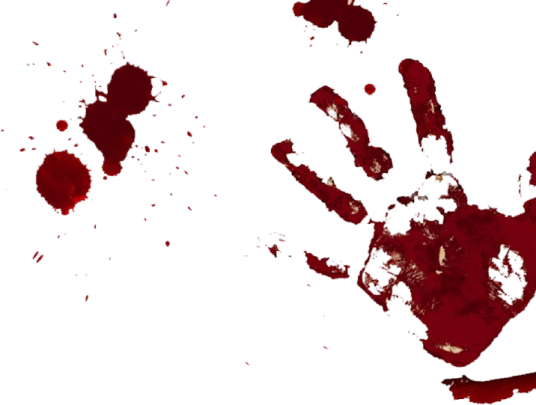
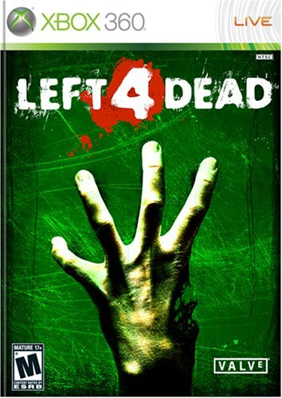
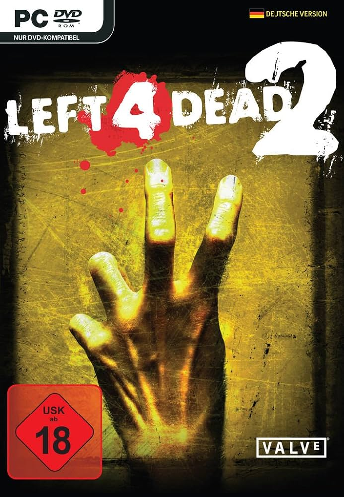
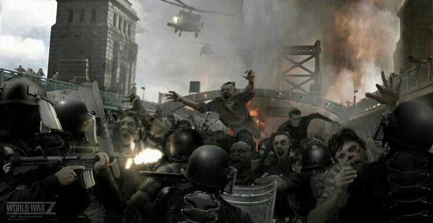
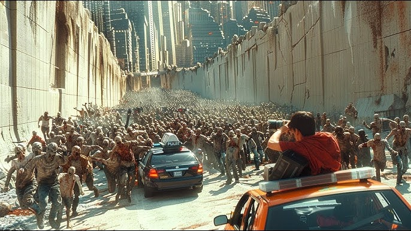

Las Entregas Del Juego

Left 4 Dead (L4D)

Left 4 Dead 2 (L4D2)
Left 4 Dead y Left 4 Dead 2 son dos juegos de disparos en primera persona (FPS) cooperativos desarrollados por Valve Corporation. Ambos juegos se centran en la supervivencia de un grupo de cuatro personajes, conocidos como Supervivientes, que deben luchar contra hordas de zombis y otras criaturas infectadas mientras intentan llegar a puntos de evacuación seguros.
Trailer Oficial
ALERTA
⚠Última hora⚠ autoridades sanitarias y militares confirman la existencia de una infección sin
precedentes. El brote, detectado inicialmente en áreas urbanas aisladas, se ha extendido a gran
velocidad, superando los protocolos de contención establecidos.
Los infectados presentan un comportamiento extremadamente agresivo y carecen de cualquier rastro de
conciencia humana. Las cuarentenas implementadas han fallado y se reportan disturbios en múltiples
ciudades. La situación ha escalado más allá del control de las fuerzas de seguridad.
El Centro de Control de Emergencias recomienda a la población mantenerse en refugios seguros, evitar
zonas concurridas y no entrar en contacto bajo ninguna circunstancia con individuos afectados. Las
comunicaciones son limitadas, pero se confirma que la amenaza es global.
Repetimos: esta no es una simulación. El colapso de la infraestructura civil es inminente. Quienes aún
resistan… deberán luchar por sobrevivir

